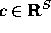

Branch and bound is the broad class of algorithms from which
branch, cut, and price is descended. Branch and bound algorithms use a
divide and conquer strategy to partition the solution space into
subproblems and then optimizes individually over each of them. For
instance, let S be the set of solutions to a given problem, and let
 be a vector of costs associated with members of S.
Suppose we wish to determine a least cost member of S and we are given
 , a ``good'' solution determined heuristically. Using
branch and bound, we initially examine the entire solution space S.
In the processing or bounding phase, we relax the problem
in some fashion. In so doing, we admit solutions that are not in the
feasible set S. Solving this relaxation yields a lower bound on the
value of an optimal solution. If the solution to this relaxation is a
member of S or has cost equal to , then we are
done--either the new solution or , respectively, is optimal.
Otherwise, we identify n subsets of S,
, a ``good'' solution determined heuristically. Using
branch and bound, we initially examine the entire solution space S.
In the processing or bounding phase, we relax the problem
in some fashion. In so doing, we admit solutions that are not in the
feasible set S. Solving this relaxation yields a lower bound on the
value of an optimal solution. If the solution to this relaxation is a
member of S or has cost equal to , then we are
done--either the new solution or , respectively, is optimal.
Otherwise, we identify n subsets of S,  , such
that
, such
that  . Each of these subsets is called a
subproblem;
. Each of these subsets is called a
subproblem;  are also sometimes called the
children of S. We add the children of S to the list of
candidate subproblems (those which need processing). This is called
the branching phase.
are also sometimes called the
children of S. We add the children of S to the list of
candidate subproblems (those which need processing). This is called
the branching phase.
To continue the algorithm, we select one of the candidate subproblems and process it. There are four possible results. If we find a feasible solution better than , then we replace with the new solution and continue. We may also find that the subproblem has no solutions, in which case we discard, or prune it. Otherwise, we compare the lower bound to our global upper bound. If it is greater than or equal to our current upper bound, then we may again prune the subproblem. Finally, if all else fails, we are forced to branch and add the children of this subproblem to the list of active candidates. We continue in this way until the list of active subproblems is empty, at which point our current best solution is the optimal one.